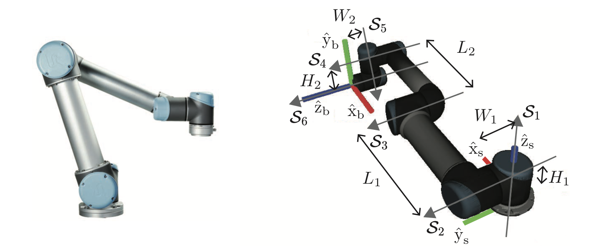

Overview


In this project, I created a "block manipulation pipeline" which automates repetitive tasks that don't require human input (Automated Block Grabbing) and provides an intuitive real-time interface to control the robot for tasks which need human input (User-Driven Block Manipulation).
- Automated Block Grabbing: An exocentric camera and computer vision pipeline determines the position of all valid blocks in a designated “block pile.” The UR5e can automatically grab the closest valid block and return control back to the user for block placement.
- User-Driven Block Manipulation: An Arduino interface manages an IMU guiding the position of the UR5e end-effector gripper (orientation is fixed), the gripper state (open/close), control mode, and control sensitivity. The user can guide UR5e in realtime to where exactly it should place a grabbed block.
- To move the end-effector into the desired state for each waypoint in a trajectory, Product of Exponentials Forward Kinematics and Newton-Raphson Numerical Inverse Kinematics was used.
- To determine valid blocks and their location, image thresholding, convolution, and Bounding Box algorithm was used in the Computer Vision pipeline.
- To understand the mapping between the IMU and trajectory generation as well as other controls, see Software Overview and Hardware Overview.